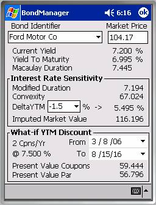
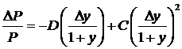
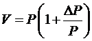

Bond Analyzer

The Bond Analyzer provides a view of the bond’s interest rate sensitivity and allows separation and discounting of associated coupons.Bond Identifier
The first thing to note about the Bond Analyzer vs. the Bond Definition Dialog is that you can’t create a bond here. Given that, the Bond Analyzer always picks the most recently used bond in your database and displays information for it rather than starting up with no entry in the Bond Identifier combo-box.
Market Price
The market price edit box allows you to modify the current market price of the bond and watch how it affects various derived information, such as current yield, yield-to-maturity, Macaulay duration, etc. If, after modifying the market price, you change the symbol or close the dialog, the modified price will be saved to the database.[1]
Current Yield
Current yield expresses the ratio of the coupon amount to the current market value of the bond.
Yield to Maturity
Yield to maturity is the interest rate that produces the current market value of the bond when the par value and all of future coupons are discounted at that rate.
Macaulay Duration
Macaulay duration scales a coupon bond’s maturity to the number of years it would mature in if it were a zero-coupon bond paying the computed yield-to-maturity. Obviously, the duration of a zero coupon bond is the number of years until its maturity. The units are years / currency. Some sources show Macaulay duration as a negative quantity. This is a misconception addressed in the Glossary entry for Macaulay duration. In NillaHedge Macaulay duration is always positive.
Interest Rate Sensitivity box
Modified duration and convexity are the ingredients required to assess the bond’s market price under varying yield conditions. While yield to maturity tells you the yield for a bond priced at a certain level, ‘What-if YTM’ allows you to reverse the process, specifying a yield and obtaining the bond value that it imputes.
Modified Duration
Modified duration rescales Macaulay duration by the periodic yield to show the response that a change in interest rates will force in the bond’s market value.
Convexity
Convexity is the degree of curvature in a bond’s price-yield curve. It makes a second order contribution to the Imputed Market Price. Details are discussed in the Glossary.
DeltaYTM
DeltaYTM is a user specified quantity which drives an experimental value of the yield-to-maturity, called the What-If YTM. The DeltaYTM combobox will accept a floating point value entered from the keypad, but it also has percentages from -5 to +5 in increments of 0.5 preloaded, so you don’t need to resort to the keypad for most What-If analyses.
What-If YTM
What-If YTM is the unlabeled quantity to the right of DeltaYTM and the static label ‘->’. What‑If YTM is the sum of the current Yield to Maturity and the DeltaYWM. What-If YTM is used to compute the Imputed Market Value of the bond, and to compute the present value of par value and a calendar range of coupons (inside the What-If YTM Discount box).
Imputed Market Value
The Imputed Market Value displays the market value of the bond imputed by the specified What-if YTM. Other contributing factors naturally include the bond’s par value, maturity, coupons, and current price. The formula for imputed market value is:
|
  |
C := convexity D := modified duration P := current market price V := imputed market value y := yield to maturity
|
What-If YTM Discount box
If you leave the From and To dates at their defaults, this section merely breaks Imputed Market Value into its first order components, with contributions from the present value of the bond’s par value, and from the present value of all future coupons. If convexity is zero, the sum of these present value components will equal the Imputed Market Value. When convexity isn’t zero, you can readily see just how much influence convexity has on the Imputed Market Value. The sum of the par’s present value and the coupons’ present value will not equal the Imputed Market Value - the difference can be attributed to the effect of convexity on bond value.
The Discount box also allows you to choose other From and To dates, so you can assess the present value of coupons from any pair of dates within the bond’s inception and maturity dates. One interesting possibility is to forward discount the coupons that have already been paid. Note that coupons with payment dates before the current time (as your Pocket-PC knows it) contribute more than their face value, not less.
n Cpns/Yr
This static string reminds you how many coupons per year the bond pays, with n replaced by te actual number of coupons per year paid by the bond.
@ d.ddd %
This static string reminds you of the bond’s coupon rate. Obviously, ‘d.ddd’ will be replaced by the appropriate numerical digits.
From Date
The From Date defaults to the current date, but has a valid range from the bond’s inception date to the To Date.
To Date
The To Date defaults to the bond’s maturity date, but has a valid range from the To Date to the bond’s maturity date.
Present Value Coupons
Present Value Coupons collects the present value of all coupons within the specified date range discounted at the What-if YTM rate. Note that it’s possible for coupons that have already been paid to contribute to this sum. Beware that coupons that have already been paid are ‘discounted’ at the complement of the What-if YTM rate, i.e. they contribute more than their face value, not less.
Present Value Par
Present Value Par is exactly analogous to Present Value Coupons, except that it’s impossible for the par value to contribute more than face value because its impossible to set the From or To dates beyond the bond’s maturity date.